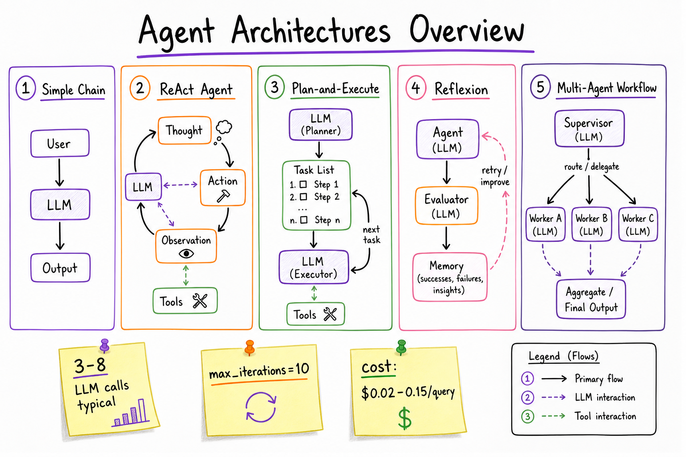
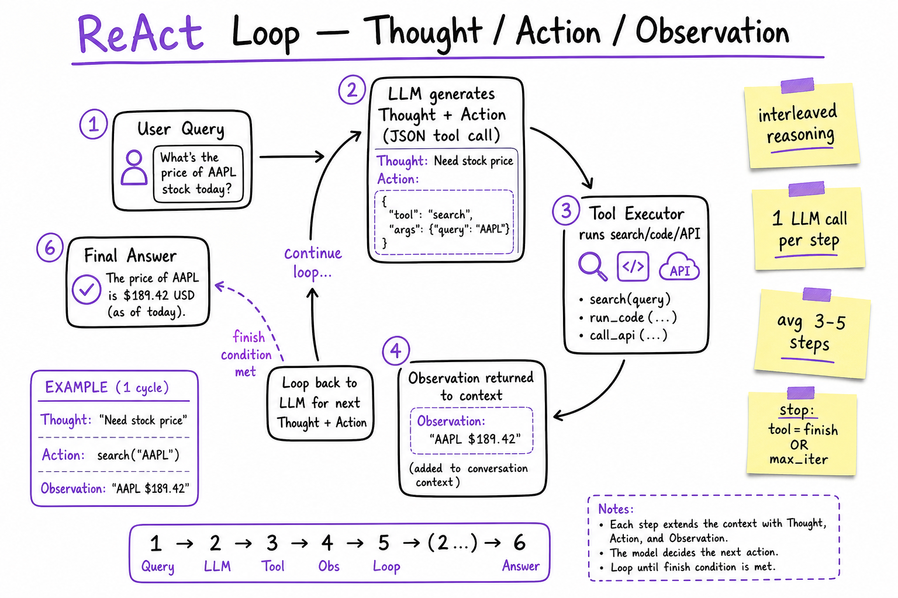
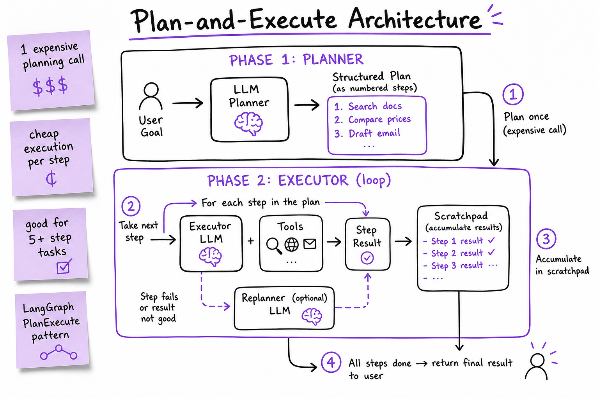

Agent Architectures // AI Systems
How LLMs decide what to do next: ReAct interleaves reasoning with tool calls, Plan-and-Execute separates planning from execution, Reflexion adds self-critique loops. Know when a simple chain beats an agent, and how to terminate loops safely.

Five patterns on one whiteboard: linear chain (1 LLM call), ReAct loop (thought→action→observation), Plan-and-Execute (planner + executor), Reflexion (agent + evaluator + memory), and supervisor multi-agent workflow.
01 — What & Why
An agent is an LLM wrapped in a control loop: it observes state, decides the next action (often a tool call), executes it, and repeats until the task is done. The architecture you choose determines latency, cost, reliability, and debuggability.
Functional requirements
- Answer multi-step questions requiring external data (search, DB, APIs)
- Execute actions on behalf of the user (send email, create ticket, run code)
- Recover from tool errors and adapt when intermediate results change the plan
- Produce a final structured or natural-language answer with citations
Non-functional requirements
- Latency: p95 < 15s for interactive chat; each LLM call adds 1–4s
- Cost: budget per query ($0.01–$0.50); cap LLM calls at 5–15
- Reliability: graceful termination; no infinite loops
- Observability: trace every thought, action, observation for debugging
- Safety: tool allowlists, human approval for destructive actions
Key insight: most production "agents" are not autonomous generalists — they are bounded loops with 3–8 tool calls, hard termination, and a fallback to human escalation.
01a — Core Concepts
| Term | Definition | Gotcha |
|---|---|---|
| Agent | LLM + control loop + tools. Decides its own next step. | Not every LLM app is an agent. If the flow is fixed, it's a chain. |
| Chain | Fixed pipeline: prompt → LLM → parse → next step. No runtime branching. | Cheaper and more predictable. Use when steps are known upfront. |
| Workflow | Explicit state machine / DAG with conditional edges. Human-designed control flow. | LangGraph, Temporal. Best when business logic is rigid. |
| ReAct | Reason + Act: LLM emits Thought, Action (tool), reads Observation, repeats. | Context grows with every step; summarize or truncate old observations. |
| Plan-and-Execute | Planner LLM writes a step list; executor LLM runs each step with tools. | Plan can go stale mid-execution; add replanning on failure. |
| Reflexion | After failure, evaluator generates critique stored in memory; agent retries. | Extra LLM calls; cap trials at 2–3 to control cost. |
| Tool-use loop | Generic pattern: LLM ↔ tool executor until no more tool calls. | OpenAI/Anthropic native function calling implements this directly. |
| Scratchpad | Working memory: accumulated thoughts, observations, intermediate results. | Don't dump raw tool JSON into user-facing output. |
| Termination | Conditions that stop the loop: final answer, max iterations, timeout, budget. | Always set max_iterations. LLMs rarely stop on their own. |
| HITL | Human-in-the-loop: pause for approval before destructive tool calls. | Production agents for write actions almost always need this. |
01b — API / Interface Surface
OpenAI-style tool-use loop
response = client.chat.completions.create(
model="gpt-4o",
messages=messages,
tools=[{"type": "function", "function": search_tool_schema}],
tool_choice="auto",
)
# If response has tool_calls → execute tools → append tool results → loop
# If response has content and no tool_calls → return final answer
LangGraph agent (ReAct-style)
from langgraph.prebuilt import create_react_agent
agent = create_react_agent(model, tools=[search, calculator])
result = agent.invoke({"messages": [("user", "What's AAPL revenue vs MSFT?")]})
# Internally: LLM → tool_call → ToolNode → LLM → ... → END
Plan-and-Execute (LangChain)
from langchain_experimental.plan_and_execute import PlanAndExecute, load_agent_executor, load_chat_planner
planner = load_chat_planner(llm)
executor = load_agent_executor(llm, tools, verbose=True)
agent = PlanAndExecute(planner=planner, executor=executor, verbose=True)
agent.run("Research competitors and draft a comparison table")
Agent config surface (what you expose)
AgentConfig: max_iterations: int = 10 # hard loop cap timeout_seconds: float = 30.0 cost_budget_usd: float = 0.25 allowed_tools: list[str] # allowlist require_approval: list[str] # ["send_email", "delete_record"] termination_tool: str = "finish" # explicit stop signal
See Tool Calling & Functions for JSON schema design, parallel tool calls, and error handling contracts.
02 — When to Use / When NOT
| Pattern | Use when | Don't use when | Typical cost |
|---|---|---|---|
| Chain | Steps are fixed and known (RAG → summarize → format). No branching. | User query requires dynamic tool selection or multi-hop reasoning. | 1–2 LLM calls |
| Tool-use loop | 1–5 tool calls, model picks tools at runtime. Most chatbots with search/calc. | Complex multi-phase tasks where upfront planning saves calls. | 2–6 LLM calls |
| ReAct | Need visible reasoning trace. Debugging matters. Research / analysis tasks. | Latency-sensitive (<3s). Reasoning tokens add cost with no user benefit. | 3–8 LLM calls |
| Plan-and-Execute | 5+ step tasks (research report, multi-doc comparison). Plan is reusable/cached. | Simple Q&A. Planning overhead exceeds benefit. | 1 plan + N execute calls |
| Reflexion | Code generation, eval-driven tasks where retry with critique helps. | Real-time chat. 2–3x cost multiplier per retry. | 2–4x base agent cost |
| Workflow (LangGraph DAG) | Business rules are rigid (approve → execute → notify). Compliance audit trail. | Exploratory tasks where path can't be predetermined. | Fixed per path |
| Multi-agent | Distinct roles (researcher + writer + reviewer). Parallelizable subtasks. | Single-domain tasks. Coordination overhead > benefit. | 3–10+ LLM calls |
Decision rule: start with a chain. Add a tool-use loop when you need 1–3 dynamic tool calls. Promote to ReAct or Plan-and-Execute only when you observe the simpler pattern failing in eval. Use a workflow when compliance requires deterministic control flow.
03 — Architecture
User Query
|
v
+-----------------------------------+
| Orchestrator (agent runner) |
| - loads config (max_iter, tools) |
| - manages scratchpad / messages |
| - checks termination conditions |
+-----------------------------------+
|
v
+-----------------------------------+
| LLM (policy) |
| - reads messages + tool schemas |
| - outputs: text OR tool_call(s) |
+-----------------------------------+
|
+--- no tool calls ---> Final Answer
|
v (tool calls)
+-----------------------------------+
| Tool Executor |
| - validate args, check allowlist |
| - run sync/async, handle errors |
| - return Observation to scratchpad|
+-----------------------------------+
|
+--- termination met? ---> Final Answer
|
+--- else ---> loop back to LLM
The orchestrator is the production-critical layer: it enforces budgets, logs traces, handles HITL pauses, and decides when to force-stop and return a partial answer.
04 — ReAct (Reason + Act)
ReAct interleaves natural-language reasoning with tool actions. The LLM explicitly writes a Thought before each Action, making the decision process inspectable.
search("AAPL stock price today")# ReAct prompt skeleton (Yao et al. 2022) Answer the question using interleaved Thought, Action, Observation steps. Thought: [reason about current state] Action: [tool_name(args)] Observation: [tool result — injected by system, NOT written by LLM] ... Thought: I now have enough information. Final Answer: [response to user]
When it wins: research tasks, debugging agent behavior, tasks where the path is unpredictable. When it loses: the Thought tokens add 20–40% cost with no accuracy gain if the task is straightforward tool selection.

ReAct hot path: each iteration is one LLM call. The system injects Observations; the model never hallucinates tool results. Average 3–5 iterations for multi-hop queries.
05 — Plan-and-Execute
Split the problem into two LLM roles: a Planner (expensive, runs once) and an Executor (cheaper, runs per step). The plan is a structured list the executor follows.
Phases
- Plan: Planner LLM decomposes the goal into 3–10 steps. Output is a numbered list or JSON plan.
- Execute: For each step, Executor LLM + tools runs independently. Results accumulate in a scratchpad.
- Replan (optional): If a step fails or returns unexpected data, invoke Planner again with current state.
- Synthesize: Final LLM call combines step results into the user-facing answer.
# Example plan output Plan: 1. Search internal docs for "refund policy" 2. Search CRM for customer order #12345 3. Compare policy against order status 4. Draft refund recommendation email
vs ReAct: Plan-and-Execute front-loads reasoning (1 big call) then runs cheap execution steps. Better when you can predict the shape of the task. ReAct adapts step-by-step but pays an LLM call per decision.

Two-phase architecture: Planner produces structured steps; Executor runs each with tools. Replanning arrow handles stale plans when intermediate results change the approach.
06 — Reflexion
Reflexion adds a self-evaluation loop: after the agent produces an answer (or fails), an Evaluator LLM critiques it. The critique is stored in episodic memory and fed back on the next attempt.
# Reflexion memory entry
{
"trial": 1,
"failure_reason": "Hallucinated API endpoint /v2/users",
"reflection": "Always call list_tools first; never invent URLs.",
"score": 0.2
}
Best for: code generation (run tests as evaluator), structured output with verifiable constraints, tasks with golden-set eval. Avoid for: latency-sensitive chat where "good enough" first try is acceptable.
07 — Tool-Use Loop
The tool-use loop is the minimal agent pattern — no explicit Thought tokens, just native function calling:
messages = [{"role": "user", "content": query}]
for i in range(max_iterations):
response = llm.chat(messages, tools=tool_schemas)
if not response.tool_calls:
return response.content # done
for call in response.tool_calls:
result = execute_tool(call.name, call.args)
messages.append(tool_result(call.id, result))
return fallback_partial_answer(messages) # hit max_iter
Production enhancements
| Enhancement | Why |
|---|---|
| Parallel tool calls | Model requests search + calculator simultaneously. Cuts latency 30–50%. |
| Tool result truncation | Search returns 10KB; summarize or top-3 before injecting into context. |
| Structured error responses | Return {"error": "not_found", "retry_hint": "..."} so LLM can recover. |
| Idempotent tools | Agent may retry the same call. Tools must be safe to re-invoke. |
| Tool routing | Pre-filter tools by intent (embed query, pick top-5 relevant tools from 50+). |
Most production agents are tool-use loops with good termination — not full ReAct. ReAct is primarily valuable for observability during development.
08 — Termination Conditions
Agents don't stop reliably on their own. You must implement multiple layered stop conditions:
| Condition | Implementation | Priority |
|---|---|---|
| Natural stop | LLM returns text with no tool_calls, or calls a finish tool. | Preferred path |
| Max iterations | max_iterations=10 (hard cap). Return partial answer + "I ran out of steps." | Always required |
| Timeout | Wall-clock timeout_seconds=30. Cancel in-flight tool calls. | Always required |
| Cost budget | Track token spend; stop when cost_budget_usd exceeded. | Production essential |
| Duplicate detection | Same tool + same args called twice → force stop. Prevents infinite search loops. | Strongly recommended |
| Stagnation | No new information in last 2 observations → stop and summarize. | Recommended |
| HITL timeout | User approval not received in 5 min → cancel action, notify. | For write/destructive tools |
| Circuit breaker | Tool error rate > 50% in last 3 calls → abort, escalate to human. | Production essential |
# Termination check (orchestrator pseudocode)
def should_stop(state) -> bool:
if state.iteration >= config.max_iterations: return True
if time.monotonic() - state.start > config.timeout: return True
if state.cost_usd > config.cost_budget: return True
if state.last_response.has_no_tool_calls(): return True
if state.duplicate_action_detected(): return True
if state.observations_unchanged(steps=2): return True
return False
09 — Production & Ops
Observability
- Trace every loop iteration: LLM input/output tokens, tool name, latency, error
- LangSmith, Langfuse, or OpenTelemetry spans per agent step
- Dashboard: avg iterations, tool error rate, cost per query, termination reason distribution
Cost control
- Use smaller model for executor steps (GPT-4o planner + GPT-4o-mini executor)
- Cache tool results (same search query within 5 min)
- Semantic cache for identical/near-identical user queries
Failure modes
| Failure | Mitigation |
|---|---|
| Infinite loop | max_iterations + duplicate detection |
| Tool timeout | Per-tool timeout (5s search, 30s code exec); return error observation |
| Context overflow | Summarize scratchpad every 5 steps; drop old observations |
| Hallucinated tool args | JSON schema validation; reject and return validation error |
| Runaway cost | cost_budget_usd + alert at 80% of daily budget |
10 — Where It Shows Up
- LangGraph — stateful agent graphs, ReAct prebuilt, Plan-and-Execute patterns, checkpointing
- CrewAI — multi-agent orchestration with role-based agents and task delegation
- Tool Calling & Functions — JSON schema tools, parallel calls, error contracts
- Multi-Agent Orchestration — supervisor pattern, handoffs, shared state
- Production Agent (HITL) — fallbacks, escalation, audit logs
- Job Scheduler (HLD) — agent tool calls map to async job execution with retries, idempotency, and DLQ
- RAG End-to-End — retrieval is often the first tool in an agent's toolkit
11 — Common Pitfalls
- Agent overkill: using ReAct for a single RAG lookup. Start with a chain; promote to agent only when eval proves you need dynamic tool selection.
- No termination: shipping without
max_iterations. One runaway query burns your daily API budget. - Raw tool output in context: injecting 50KB search results. Truncate and summarize before the next LLM call.
- Non-idempotent tools: agent retries
charge_card()twice. Every tool must be safe to re-invoke or gated by idempotency keys. - Thought tokens in production: ReAct reasoning visible to users adds latency and cost. Strip Thoughts from user-facing output.
- Stale plans: Plan-and-Execute plan written upfront but step 3 returns unexpected data. Always implement replanning.
- Eval without tool mocks: testing agents against live APIs is flaky and expensive. Mock tools in CI; live eval nightly.
- Too many tools: 50 tools in schema confuses the model. Route to top-5 relevant tools per query.
12 — Interview Q&A
What's the difference between an agent, a chain, and a workflow?
Explain ReAct and when you'd choose it over a simple tool-use loop.
How does Plan-and-Execute differ from ReAct?
What is Reflexion and what's the cost trade-off?
How do you prevent an agent from running forever?
max_iterations=10 hard cap, (2) wall-clock timeout (30s), (3) cost budget ($0.25/query), (4) duplicate action detection (same tool+args twice), (5) stagnation detection (no new info in 2 steps), (6) explicit finish tool or no tool_calls in response. Never rely on the LLM to decide when to stop — always enforce caps in the orchestrator.How many LLM calls should a production agent make per query?
How do you handle tool errors inside the agent loop?
{"error": "not_found", "message": "No results for query X", "retry_hint": "Try broader terms"}. The LLM reads the error and can retry with different args. Set per-tool timeouts (5s search, 30s code exec). If error rate exceeds 50% in last 3 calls, circuit-break and escalate to human. Never let tool exceptions crash the loop.